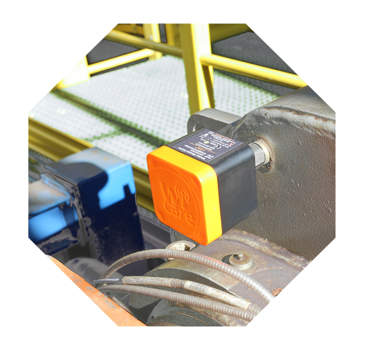
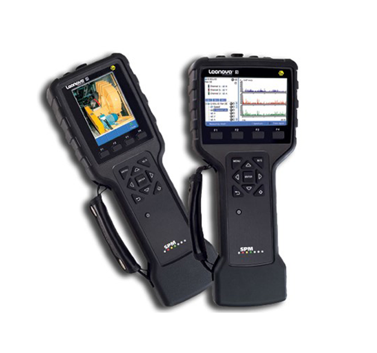
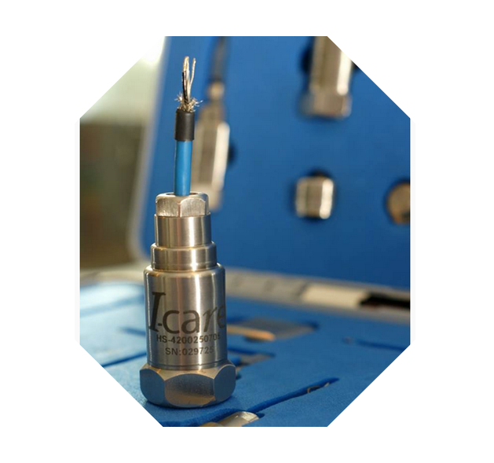

About
Group company
I-care Reliability Inc. was established in 2016 as the US subsidiary of I-care Group of Belgium, to deliver proven wireless vibration monitoring and diagnostics solutions to the North American Industrial market. For over ten years, this proven wireless
sensor technology has matured and been implemented. Along the way I-care has developed a faithful user-base in Europe with over to ____ stations, on ____ different sites.
With a staff of over 150 dedicated advanced
technicians, research engineers, and experienced service personnel around the world, I-care has quickly grown in reputation filling in the area where wired solutions are not either practical or cost-justified. Cost effective vibration
monitoring remains critical to sustainable operations and increasingly required by evolving regulations.
Customer Value
I-care fills a critical gap in the Condition Monitoring technologies for process industry assets, as it can be installed permanently on specified rotating equipment, or used for spot checks in a safer manner during programmed inspection routines. I-care
sensors are typically attached on critical equipment, or snapped on by powerful magnets, ensuring adequate accelerometer coupling with the component of the equipment. Magnetic-coupled sensors can be easily repositioned to other critical
locations of potential problems where data can be collected, analyzed and archived.
Signal and spectrum comparisons are used between the time-lapse measurement themselves and with the reference signature for
the designated equipment at its initial installation and/or at its manufacturing plant.
While continuous monitoring by wire for predictive maintenance activities generally is justified for motors in excess of 5000HP, it would
be impractical or cost-prohibitive to extend the use of this approach for lower output equipment, particularly in brownfield plants.
This is where I-care’s wireless, battery-operated, ICP accelerometer-based vibration monitoring
sensor finds its most valuable implementation, using broad-frequency spectrum digital recordings sent via the Wi-care gateway to cloud hosting and consumed by the I-see Analytical Dashboard. The backend processing is provided by I-care
and there is no investment in computer hardware required by the customer.
A flexible commercial model is available that can include an outright purchase of the system by the customer or a subscription option for vibration monitoring
on demand.

Key Features
I-Care’s innovative technology matches or exceeds comparable products from more established vendors:
- Providing best-in-class single and tri-axial sensors, at a very high value-to-cost ratio
- Delivering easy-to-deploy Class 1 Div 1-certified systems (IECEX/ATEX certified), with fast relocation as required, pushing critical information to any established IIoT dash-board.
- 5-year battery life
- Proven ICP Piezoelectric technology
- Flat response spectrum to 16kHz
- Secure with AES_128_GSM encryption; outbound connection (no inbound connection required)
- I-see Premier-quality software, open-platform, data management and services, accessible from secured servers anytime, anywhere, on any mobile device
- On demand spectrum analysis by our experts at HQ.
- Secure access to data via Chrome, Firefox and Microsoft Edge.
- Promotes plant safety by minimizing time needed on the ground to take measurements.
Vibration Solutions
Products
I-Care products address asset condition management, Vibration Analysis for occasional and regular interval monitoring.
| I-see | Wi-care | Extensive solution range and expert consulting |
Sensor flexibility |
|---|---|---|---|
 |
 |  |  |
|
I-seeTM, I-care’s open, cloud-based data analytics dashboard, captures real-time data from any Wi-care transmitter. This IIoT platform is open to integration and is designed to centralize data, reporting and Kpi’s for multiple predictive technologies.
I-see includes an open API for easy interfacing with other platforms, enabling discrete asset or multiple plant management to Corporate Implementation. An up-to-date browser such as Google Chrome™, Microsoft Edge™ or Mozilla Firefox™ is all you need, no special software installation is required. The platform can be accessed anywhere on any portable or PC device and the Android App. |
The Wi-careTM system is a wireless vibration and temperature monitoring solution. It allows automated tracking of critical equipment, from 15-minute to once-a-week intervals, collecting reliable vibration data, with sampling of up to 16,000 lines of resolution.
Snap it on, plug and play, deploy triax, Class1 Div1-certified accelerometers and enjoy long battery lifetime with Wi-care, likely the most performing wireless vibration system available. The sensors can be deployed and configured in less than an hour, whether for permanent or intermittent monitoring. Extended broadcast and automatic network capabilities guarantee data transmission reliability and sustainability to maximize your asset up-time. |
I-care Reliability also represents SPM Instrument and their on-line and off-line vibration products. For some 50 years, SPM has been developing and promoting high performance condition-monitoring solutions to the Process industry. SPM’s unique HD Technologies
remain unsurpassed, particularly for low speed equipment and early fault detection on anti-friction bearings. This state-of-the-art vibration analysis technology is available both on the premium data collectors LEONOVA and on the
INTELLINOVA online system. Expert consulting expertise is available to augment your existing systems with combined I-care and SPM devices. |
I-care Reliability also offers a complete range of high performance vibration transducers ideally suited to your needs, distributed in partnership with a leading manufacturer. Depending of specific requirements, constraints and implementation criteria, I-care will deliver the right sensor or combination for specific needs, built on ICP piezoelectric proven technology, low background noise, extended lifetime and high signal reliability. All devices can leverage 4-20mA application with connection to PLC or SNCC system, and include junction boxes and vibration switches for remote or hazardous placement locations. |
Services
| Remote Diagnostic Monitoring | Commissioning Lifecycle |
|---|---|
|
|
Support
Pre-deployment Advisory
Selection and Evaluation (pdf)
Our trained and ISO-certified engineers can assist and recommend the optimal solution mix for your needs.
Configuration
We provide the optimal network and placement configuration
Cost Justification (pdf)
Need help in budgeting and determining the ROI profiles for management consideration?
Post-deployment Support
Consulting
Comprehensive vibration monitoring plans, KPI definition from templates, on demand technical questions answered.
Evaluation
Using the I-see platform, our ISO-certified engineers Vibration Level 3 provide expert guidance in the diagnosis and resolution of machinery health and provide maintenance advisory services.
Best Practices
With over 15 years of vibration analysis experience, I-care offers a wide range of best practices and outstanding services.
Industries
| Cement | Pipelines | ||
| Pharma | Power Generation | ||
| Pulp and Paper | Refining | ||
| Mining |
Contact
Offices
Along the way I-care has developed a faithful user-base in Europe with over 2000 stations on hundreds of different sites.